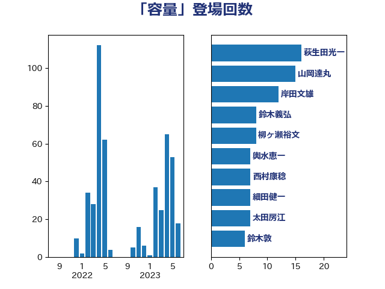

単語「容量」

| 萩生田光一 | 自由民主党 | 16 回 |
| 山岡達丸 | 立憲民主党 | 15 回 |
| 岸田文雄 | 自由民主党 | 12 回 |
| 鈴木義弘 | 国民民主党 | 8 回 |
| 柳ヶ瀬裕文 | 日本維新の会 | 8 回 |
| 輿水恵一 | 公明党 | 7 回 |
| 西村康稔 | 自由民主党 | 7 回 |
| 細田健一 | 自由民主党 | 7 回 |
| 太田房江 | 自由民主党 | 7 回 |
| 鈴木敦 | 国民民主党 | 6 回 |
| 山崎誠 | 立憲民主党 | 6 回 |
| 山下芳生 | 日本共産党 | 6 回 |
| ながえ孝子 | 無所属 | 6 回 |
| 石井章 | 日本維新の会 | 5 回 |
| 高橋千鶴子 | 日本共産党 | 4 回 |
| 高橋はるみ | 自由民主党 | 4 回 |
| 金子恭之 | 自由民主党 | 4 回 |
| 足立敏之 | 自由民主党 | 4 回 |
| 猪瀬直樹 | 日本維新の会 | 4 回 |
| 浜田靖一 | 自由民主党 | 4 回 |
| 末松信介 | 自由民主党 | 4 回 |
| 斎藤アレックス | 国民民主党 | 4 回 |
| 斉藤鉄夫 | 公明党 | 4 回 |
| 宮口治子 | 立憲民主党 | 4 回 |
| 吉良州司 | 無所属 | 4 回 |
| 阿達雅志 | 自由民主党 | 3 回 |
| 空本誠喜 | 日本維新の会 | 3 回 |
| 秋本真利 | 無所属 | 3 回 |
| 河野太郎 | 自由民主党 | 3 回 |
| 櫛渕万里 | れいわ新選組 | 3 回 |
| 松本剛明 | 自由民主党 | 3 回 |
| 山際大志郎 | 自由民主党 | 3 回 |
| 小林鷹之 | 自由民主党 | 3 回 |
| 塩田博昭 | 公明党 | 3 回 |
| 吉良よし子 | 日本共産党 | 3 回 |
| 鬼木誠 | 立憲民主党 | 2 回 |
| 長峯誠 | 自由民主党 | 2 回 |
| 舩後靖彦 | れいわ新選組 | 2 回 |
| 紙智子 | 日本共産党 | 2 回 |
| 笠井亮 | 日本共産党 | 2 回 |
| 竹内真二 | 公明党 | 2 回 |
| 神津たけし | 立憲民主党 | 2 回 |
| 矢倉克夫 | 公明党 | 2 回 |
| 白石洋一 | 立憲民主党 | 2 回 |
| 浅野哲 | 国民民主党 | 2 回 |
| 浅田均 | 日本維新の会 | 2 回 |
| 平山佐知子 | 無所属 | 2 回 |
| 小野泰輔 | 日本維新の会 | 2 回 |
| 寺田静 | 無所属 | 2 回 |
| 寺田稔 | 自由民主党 | 2 回 |
| 大島敦 | 立憲民主党 | 2 回 |
| 塩崎彰久 | 自由民主党 | 2 回 |
| 城井崇 | 立憲民主党 | 2 回 |
| 北村経夫 | 自由民主党 | 2 回 |
| 中野洋昌 | 公明党 | 2 回 |
| 三浦信祐 | 公明党 | 2 回 |
| 高市早苗 | 自由民主党 | 1 回 |
| 馬場伸幸 | 日本維新の会 | 1 回 |
| 阿部知子 | 立憲民主党 | 1 回 |
| 金城泰邦 | 公明党 | 1 回 |
| 重徳和彦 | 立憲民主党 | 1 回 |
| 豊田俊郎 | 自由民主党 | 1 回 |
| 西田実仁 | 公明党 | 1 回 |
| 落合貴之 | 立憲民主党 | 1 回 |
| 菅直人 | 立憲民主党 | 1 回 |
| 荒井優 | 立憲民主党 | 1 回 |
| 美延映夫 | 日本維新の会 | 1 回 |
| 篠原孝 | 立憲民主党 | 1 回 |
| 稲田朋美 | 自由民主党 | 1 回 |
| 福山哲郎 | 立憲民主党 | 1 回 |
| 礒崎哲史 | 国民民主党 | 1 回 |
| 石川香織 | 立憲民主党 | 1 回 |
| 石川昭政 | 自由民主党 | 1 回 |
| 石川大我 | 立憲民主党 | 1 回 |
| 石井苗子 | 日本維新の会 | 1 回 |
| 田嶋要 | 立憲民主党 | 1 回 |
| 渡辺猛之 | 自由民主党 | 1 回 |
| 渡辺孝一 | 自由民主党 | 1 回 |
| 清水貴之 | 日本維新の会 | 1 回 |
| 泉田裕彦 | 自由民主党 | 1 回 |
| 沢田良 | 日本維新の会 | 1 回 |
| 池田佳隆 | 自由民主党 | 1 回 |
| 水岡俊一 | 立憲民主党 | 1 回 |
| 武部新 | 自由民主党 | 1 回 |
| 梅村みずほ | 日本維新の会 | 1 回 |
| 松川るい | 自由民主党 | 1 回 |
| 松山政司 | 自由民主党 | 1 回 |
| 本庄知史 | 立憲民主党 | 1 回 |
| 日下正喜 | 公明党 | 1 回 |
| 平木大作 | 公明党 | 1 回 |
| 山本剛正 | 日本維新の会 | 1 回 |
| 山口晋 | 自由民主党 | 1 回 |
| 小森卓郎 | 自由民主党 | 1 回 |
| 宮崎勝 | 公明党 | 1 回 |
| 室井邦彦 | 日本維新の会 | 1 回 |
| 奥野総一郎 | 立憲民主党 | 1 回 |
| 大岡敏孝 | 自由民主党 | 1 回 |
| 堀場幸子 | 日本維新の会 | 1 回 |
| 嘉田由紀子 | 無所属 | 1 回 |
| 吉川沙織 | 立憲民主党 | 1 回 |
| 古川禎久 | 自由民主党 | 1 回 |
| 勝目康 | 自由民主党 | 1 回 |
| 務台俊介 | 自由民主党 | 1 回 |
| 前川清成 | 日本維新の会 | 1 回 |
| 佐藤啓 | 自由民主党 | 1 回 |
| 伊東信久 | 日本維新の会 | 1 回 |
| 井林辰憲 | 自由民主党 | 1 回 |
| 井上哲士 | 日本共産党 | 1 回 |
| 中西祐介 | 自由民主党 | 1 回 |
| 中川郁子 | 自由民主党 | 1 回 |
| 中川貴元 | 自由民主党 | 1 回 |
| 下条みつ | 立憲民主党 | 1 回 |